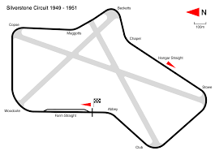

Il primo campionato mondiale di Formula 1, compiuto al Circuito di Silverstone in Gran Bretagna, fu stato da Nino Farina,
che correva su una Alfa Romeo 158
Scuderie più importanti che hanno partecipato:

Il campionato mondiale di Formula 1 1950 organizzato dalla FIA è stato, nella storia della categoria, il 1° ad assegnare il Campionato Piloti.
Iniziò il 13 maggio e terminò il 3 settembre, dopo 7 gare, sei disputate